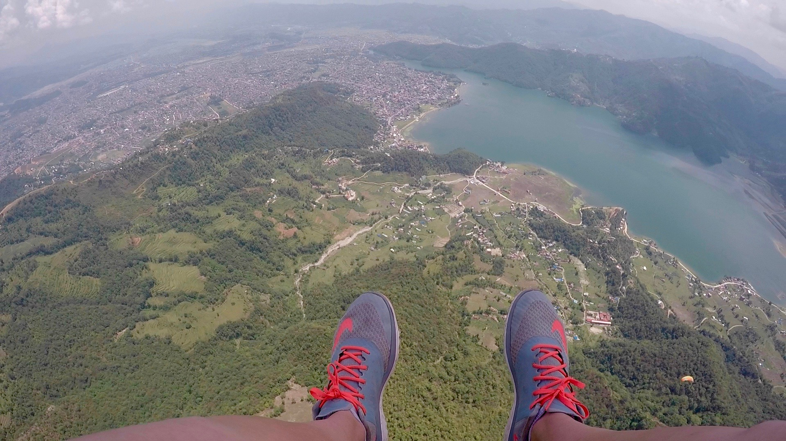

Everest Base Camp is the most popular trek in Nepal. The trek typically takes 12-20 days, depending on fitness and ability to acclimate. It starts at 9,250ft in Lukla and goes to EBC at 17,500ft. It's an out and back trek, 38 miles each way. During the months of April and May, you'll see tons of camps setup for mountaineers summiting Everst.

Pokhara is the extreme sport capital of Nepal and perfect for adrenaline junkies. Sky diving, rafting, kayaking, zip lining, mountain biking, and paragliding are the top attractions.
Pokhara is one of the top paragliding locations in the world, with all the right elements: stable thermals, convenient take-off and landing zones, the safety of a large lake and incredible mountain views of the Annapurna region.
